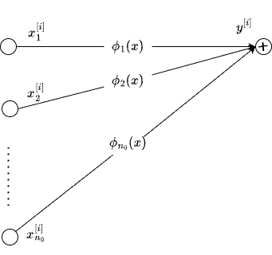
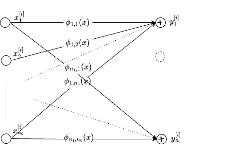
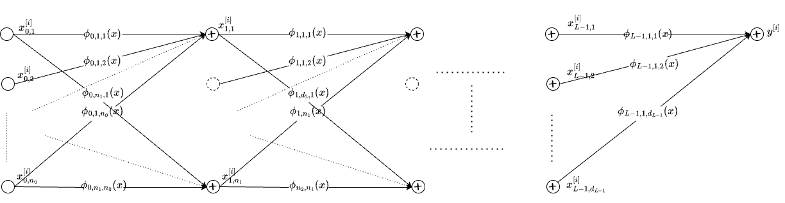

KANs
Materials:
Date: Saturday, 21-Sep-2024, 1.30pm, IST.
Pre-work:
In-Class
- KAN: Kolmogorov-Arnold Networks
- Implementation PyKAN
- Implementation Efficient-KAN
- KAN 2.0: Kolmogorov-Arnold Networks Meet Science
Lab
- Fit a function from PyKAN simple functions
- Splines from PyKAN on a Doppler function.
- RBFs from Fast-KAN on a Doppler function
- Chebyshev Polynomials from ChebyKAN on a Doppler function
- Wavelets from WavKAN on a Doppler function
- PDE solver
- Wavelets with IWT
- Wavelet Regression in Python
Post-class:
- [paper] Chebyshev KAN Chebyshev Polynomial-Based Kolmogorov-Arnold Networks: An Efficient Architecture for Nonlinear Function Approximation. Implementation ChebyKAN
- [paper] Survey of KANs A Comprehensive Survey on Kolmogorov Arnold Networks (KAN)
- [code] Fast KAN Replace B-splines with RBF to make it 3.3x faster than Efficient-KAN
- [paper]Kolmogorov-Arnold Convolutions: Design Principles and Empirical Studies | code
- [collection] awesome KANs - a collection of papers, codes, tutorials on KANs.
KAN Papers and Advancements
- KAN vs MLP KAN or MLP: A Fairer Comparison
- KANs for PINNs Kolmogorov Arnold Informed neural network: A physics-informed deep learning framework for solving forward and inverse problems based on Kolmogorov Arnold Networks
- Wav-KAN Wav-KAN: Wavelet Kolmogorov-Arnold Networks
- KAN GPT
Theory
- 1957-On the representation of continuous functions of several variables by superpositions of continuous functions of a smaller number of variables : The original Kolmogorov Arnold paper
- 1957-On functions of three variables
- 2009-On a constructive proof of Kolmogorov’s superposition theorem
- 2021-The Kolmogorov-Arnold representation theorem revisited
- 2021-The Kolmogorov Superposition Theorem can Break the Curse of Dimension When Approximating High Dimensional Functions
Additional References
- [Book] Essential Wavelets for Statistical Applications and Data Analysis
- [Book] All of Nonparametric Statistics - Chapter 9
- [Book] Functional Data Analysis Chapter 3 on Fourier basis, Splines, Wavelets and Polynomials
- [Book] Functional Data Analysis with R and MATLAB - Chapter 2 on specifying basis functions
- [Book] Generalized Additive Models by Hastie and Tibshirani. paper
- [Tutorial] Functional Regression
- [Tutorial] Functional Data Analysis: An Introduction and Recent Developments
Notes
The following (written in blue) is taken mostly verbatim from hellokan.ipynb, the authors of KAN.
Kolmogorov-Arnold representation theorem
Kolmogorov-Arnold representation theorem states that if \(f\) is a multivariate continuous function on a bounded domain, then it can be written as a finite composition of continuous functions of a single variable and the binary operation of addition. More specifically, for a smooth \(f : [0,1]^{n} \to \mathbb{R}\), \[f(x) = f(x_1,...,x_{n})=\sum_{q=1}^{2{n}+1}\Phi_q(\sum_{p=1}^{n} \phi_{q,p}(x_p))\] where \(\phi_{q,p}:[0,1]\to\mathbb{R}\) and \(\Phi_q:\mathbb{R}\to\mathbb{R}\). In a sense, they showed that the only true multivariate function is addition, since every other function can be written using univariate functions and sum. However, this 2-Layer width-\((2{n}+1)\) Kolmogorov-Arnold representation may not be smooth due to its limited expressive power. We augment its expressive power by generalizing it to arbitrary depths and widths.
Kolmogorov-Arnold Network (KAN)
The Kolmogorov-Arnold representation can be written in matrix form \[f(x)={\bf \Phi}_{\rm out}\circ{\bf \Phi}_{\rm in}\circ {\bf x}\] where \[{\bf \Phi}_{\rm in}= \begin{pmatrix} \phi_{1,1}(\cdot) & \cdots & \phi_{1,n}(\cdot) \\ \vdots & & \vdots \\ \phi_{2n+1,1}(\cdot) & \cdots & \phi_{2n+1,n}(\cdot) \end{pmatrix},\quad {\bf \Phi}_{\rm out}=\begin{pmatrix} \Phi_1(\cdot) & \cdots & \Phi_{2n+1}(\cdot)\end{pmatrix}\] We notice that both \({\bf \Phi}_{\rm in}\) and \({\bf \Phi}_{\rm out}\) are special cases of the following function matrix \({\bf \Phi}\) (with \(n_{\rm in}\) inputs, and \(n_{\rm out}\) outputs), we call a Kolmogorov-Arnold layer: \[{\bf \Phi}= \begin{pmatrix} \phi_{1,1}(\cdot) & \cdots & \phi_{1,n_{\rm in}}(\cdot) \\ \vdots & & \vdots \\ \phi_{n_{\rm out},1}(\cdot) & \cdots & \phi_{n_{\rm out},n_{\rm in}}(\cdot) \end{pmatrix}\] \({\bf \Phi}_{\rm in}\) corresponds to \(n_{\rm in}=n, n_{\rm out}=2n+1\), and \({\bf \Phi}_{\rm out}\) corresponds to \(n_{\rm in}=2n+1, n_{\rm out}=1\). After defining the layer, we can construct a Kolmogorov-Arnold network simply by stacking layers! Let’s say we have \(L\) layers, with the \(l^{\rm th}\) layer \({\bf \Phi}_l\) have shape \((n_{l+1}, n_{l})\). Then the whole network is \[{\rm KAN}({\bf x})={\bf \Phi}_{L-1}\circ\cdots \circ{\bf \Phi}_1\circ{\bf \Phi}_0\circ {\bf x}\] In constrast, a Multi-Layer Perceptron is interleaved by linear layers \({\bf W}_l\) and nonlinearities \(\sigma\): \[{\rm MLP}({\bf x})={\bf W}_{L-1}\circ\sigma\circ\cdots\circ {\bf W}_1\circ\sigma\circ {\bf W}_0\circ {\bf x}\] Even though cumbersome to write, but simpler to see is the following form of the KAN network. Assuming output dimension \(n_{L}=1\), and define \(f(\bf{x})\equiv {\rm KAN}(\bf{x})\): \[ f(\bf{x})=\sum_{i_{L-1}=1}^{n_{L-1}}\phi_{L-1,i_{L},i_{L-1}}\left(\sum_{i_{L-2}=1}^{n_{L-2}}\cdots\left(\sum_{i_2=1}^{n_2}\phi_{2,i_3,i_2}\left(\sum_{i_1=1}^{n_1}\phi_{1,i_2,i_1}\left(\sum_{i_0=1}^{n_0}\phi_{0,i_1,i_0}(x_{i_0})\right)\right)\right)\cdots\right) \]
The basic ingredient is the so called learnable activation \(\phi_{l,j,i}\) which maps the post-activation of \(i\)th neuron in layer \(l\) to the pre-activation of \(j\)th neuron in the \(l+1\)th layer. Effectively, it is the edge connecting two neurons on adjacent layers. But how can it be made learnable? Represent this activation function as: \[ \begin{align} \phi(x)=w_{b} b(x)+w_{s}{\rm spline}(x) \\ b(x)={\rm silu}(x)=x/(1+e^{-x}) \\ {\rm spline}(x) = \sum_i c_iB_i(x) \end{align} \] where \(c_i\)s are trainable/learnable parameters, \(B_i\) are the Spline basis functions (in the original KAN paper). The authors included \(b(x)\), a \(SiLU\), as a residual connection.
The above development of KANs is compelling but it is much more illustrative to approach it from a Nonparametric Regression point of view, and then see that KAN’s are a type of Deep Nonparametric Regressors. Then, we realize that the standard terminology like neurons, activations, pre-activations, post-activation etc., can be completely dropped.
Shallow Nonparametric Regression
Consider the following regression problem \[y^{[i]} \equiv f(x^{[i]}) + e^{[i]} \equiv \phi(x^{[i]}) + e^{[i]}, i \in \left\{1,\dots,N\right\}\] with \(D = \{x^{[i]}, y^{[i]}\}_{i=1}^{N}\) representing all the data available to fit (train) the model \(f(x)\). It is customary to write the model as \(f(x)\) instead of \(\phi(x)\). It is done for compatibility with KAN. In the shallow case \(f(x) = \phi(x)\) otherwise \(\phi(x)\) is used to denote the building blocks and \(f(x)\) will be a composition of many such building blocks.
For a moment, w.l.o.g, assume \(x\) to be univariate. In a typical regression setup, one constructs features such as \(x^2, x^3,\dots\), like in polynomial regression and treat this as a Linear Regression problem. We can view this standard procedure as expanding the function \(f(x)\) on a set of Polynomials. Seen in a more general sense, we can choose an appropriate Basis Functions to construct the feature space. For example [see Chapter 9 of All of Nonparametric Statistics] \[f(x) \equiv \phi(x) = \sum_{i=1}^{\infty} \beta_i B_i(x)\] where \(B_1(x) \equiv 1, B_i(x) \equiv \sqrt{2}\cos((i-1)\pi x) \text{ for } i \ge 2\). See the figure below.
In practice, we will truncate the expansion up to some finite number of terms. For illustration, say, we choose \(p\) terms. Then, in matrix notation, the regression problem is: \[ \begin{array}{left} {\bf y} = {\bf X}{\bf \beta} + {\bf \epsilon} \end{array} \] where \[ \begin{array}{left} {\bf X}_{N \times p} &=& \begin{pmatrix} 1 & \sqrt{2}\cos(\pi x^{[1]}) & \dots & \sqrt{2}\cos((p-1)\pi x^{[1]}) \\ 1 & \sqrt{2}\cos(\pi x^{[2]}) & \dots & \sqrt{2}\cos((p-1)\pi x^{[2]}) \\ \vdots & & & \vdots \\ 1 & \sqrt{2}\cos(\pi x^{[N]}) & \dots & \sqrt{2}\cos((p-1)\pi x^{[N]}) \end{pmatrix} \\ {\bf \beta}_{p \times 1} &=& [\beta_1, \beta_2, \dots, \beta_p ]^T \\ {\bf y}_{N \times 1} &=& [y^{[1]}, y^{[2]}, \dots, y^{[N]} ]^T \\ \end{array} \] This is the classic Nonparametric Regression setup. Different choices of the basis functions lead to different design matrices \({\bf X}\). Some popular choices are Splines, Chebyshev Polynomials, Legendre Polynomials, Wavelets, among others.
Specifically, the function approximation with wavelets takes the following form [see Wavelet Regression in Python for a very nice demonstration of wavelets for denoising]: \[\phi(x) = \alpha\zeta(x) + \sum_{j=0}^{J-1}\sum_{k=0}^{2^j-1}\beta_{jk}\psi_{jk}(x)\] where \[\alpha=\int_0^1\phi(x)\zeta(x)dx\text{, }\beta_{jk}=\int_0^1\phi(x)\psi_{jk}(x)dx.\] Here \(\alpha\) and \(\beta_{jk}\) are called the scaling coefficients and the detail coefficients, respectively. The basic idea is that the detail coefficients capture the coarser details of the function while the scaling, or smoothing, coefficients capture the overall functional form.
So, by choosing a basis function, we map the observed inputs into the feature space defined by the basis functions, and project the response onto the space spanned by the basis functions. This is basically a Linear Regression in a different function space (induced by the basis functions), commonly referred to as Nonparametric Regression.
Generalized Additive Models
How do we extend the above formulation to multivariate case. Say, we have \(n_{0}\) dimensional inputs. One obvious but non-trivial way is to choose a multivariate basis function. The other way to do that is to construct feature space based on univariate functions which we know how to approximate already. For example, take the cartesian product space as \(f(x) \equiv \phi(x) = \Pi_{p=1}^{n_{0}} \phi_p(x_p)\) where \(\phi_p\) can be expanded like before (univariate case). Or we can construct the function \(f(x)\) additively as \[ \begin{array}{left} f(x) \equiv \phi(x) = \sum_{p=1}^{n_{0}} \phi_p(x_p) \end{array} \] See the figure below for an illustration.

That is, for every dimension \(p\) of input, there is a corresponding \(\phi_p\) and we can add them to get a multivariate function. In fact, the above specification appears in the framework developed by Hastie and Tibhirani in 1986, known as Generalized Addtive Models (see paper, wiki) or GAMs as they are popularly referred to.
In the context of KANs, we can see this exactly as node at layer \(l+1\), which takes inputs from layer \(l\), whose edges represent the transformation of the inputs via \(\phi_p\). Except for notational differences, each neuron in KAN is a GAM.
Vector Generalized Additive Models
So far we are dealing with single output and multiple inputs. But what if there are \(n_{1}\) outputs. This leads us to Vector Generalized Additive Models (VGAMs), proposed by Yee and Wild in 1996 (see paper, wiki). We can represent VGAM as:
\[ \begin{array}{left} y_q \equiv f_{q,.}(x) \equiv \phi_{q,.}(x) = \sum_{p=1}^{n_{0}} \phi_{q,p}(x_p) \end{array} \]
See the figure below.

In effect, one KAN layer is actually a VGAM. So, given \(D=\{x^{[i]}, y^{[i]}\}_{i=1}^{N}\) with \(x^{[i]} \in R^{n_{0}}, y^{[i]} \in R^{n_{1}}\) outputs, KAN Layer and VGAM learn \(\phi_{q,p}\) which are specified in terms of the basis functions. Note that, the choice of the basis functions should correspond to the domain and range of the functions being modeled. GAMS and VGAM models are trained (or leant) using back-fitting techniques. There is no reason why we can not apply backprop and fit these models using gradient descent.
Deep Nonparametric Regression
What remains to be done is to stack the KAN layers or VGAMs. That gets us to the model we have seen before: \[ f(\bf{x})=\sum_{i_{L-1}=1}^{n_{L-1}}\phi_{L-1,i_{L},i_{L-1}}\left(\sum_{i_{L-2}=1}^{n_{L-2}}\cdots\left(\sum_{i_2=1}^{n_2}\phi_{2,i_3,i_2}\left(\sum_{i_1=1}^{n_1}\phi_{1,i_2,i_1}\left(\sum_{i_0=1}^{n_0}\phi_{0,i_1,i_0}(x_{i_0})\right)\right)\right)\cdots\right) \] For clarity sake, \(x_{i_0}\) is referring to the \(i_0\)th input dimension or feature, \(\phi_{l,q,p}(.)\) refers to the function that maps \(p\)th input of layer \(l\) to the (before summation) \(q\)th output.

From the above figure, it is clear that the edges of the KAN network are nonparametric functions \(\phi(x)\) which are specified via basis functions such as Splines. Even MLPs have weights on the edges. So, the mainstream interpretation that, in KANs, the activations are on the edges and they are learnable is not very convincing. In both MLPs and KANs, the edges are learnable. For example, if we choose \(\phi(x) = \beta x\), and replace the sum with sum preceded by elementwise, fixed activations like \(SiLU\), we get the standard MLP network. KAN proposed by Liu et al in 2024 is a Deep Nonparametric Regression framework. Specifically, we note the following:
- KAN neuron is a Generalized Additive Model (GAM)
- KAN layer is a Vector GAM (VGAM)
- KAN Network is a Deep VGAM or simply put a Deep Nonparametric Regression Model
The generality of this technique comes from
- flexibility of the specification (multiple inputs, multiple outputs, varying depth and width, choice of basis functions) and
- the deep learning framework itself (so we can fit almost all methods using backprop without doing any custom implementations). See for example,
Not only that, the modularity of the KAN layer allows one to mix and match KAN layer with other modules such as a Transformer block or an RNN block, for example. We can replace MLP with KAN almost like a drop-in. We have already seen implementation of KANs in GPT models GTP-KAN, GPT2-KAN. They also started appearing in CNNs. For more resources see awesome-KANS.
Explore the features of KANs such as interpretability, solving PDEs, check out this KAN Features notebook or go through the examples from PyKAN official repo.
Limitations
Few limitation of KANs at this time are:
- They are relying on one dimensional (univariate) functions as the building blocks. This need not be efficient always. For example, consider 2d functions that have certain spatial or temporal properties. To apply KANs, we have to convert them to 1d first and then model them in KAN layers. It would be much better if we can find multivariate basis functions that can naturally deal with arbitrary dimensions. For example, to process images, 2d wavelets could be a better choice.
- In many cases, MLPs still seem to be doing better. See KAN or MLP: A Fairer Comparison for details. KANs seem to be good at symbolic regression problems which have much more grounding in physical and other sciences.
- Spline-based KANs, as noted by others are computationally slow. Knot selection (how many and where to place them) are important hyperparameters which can affect the performance significancy. Grid refinement implemented by the KAN authors is a welcoming step in this direction but it is a hard problem.
That said, KANs are extremely interesting in the sense that:
- KAN is a Deep Nonparametric regression framework
- Very generic
- After pruning and doing some symbolic search, one can recover interpretable equations, which may be difficult to do in a typical Deep Neural Network.
- Combining the power of Wavelets, Filter Banks, Multi Resolution Analysis (MRA) in the KAN framework would be interesting to pursue.